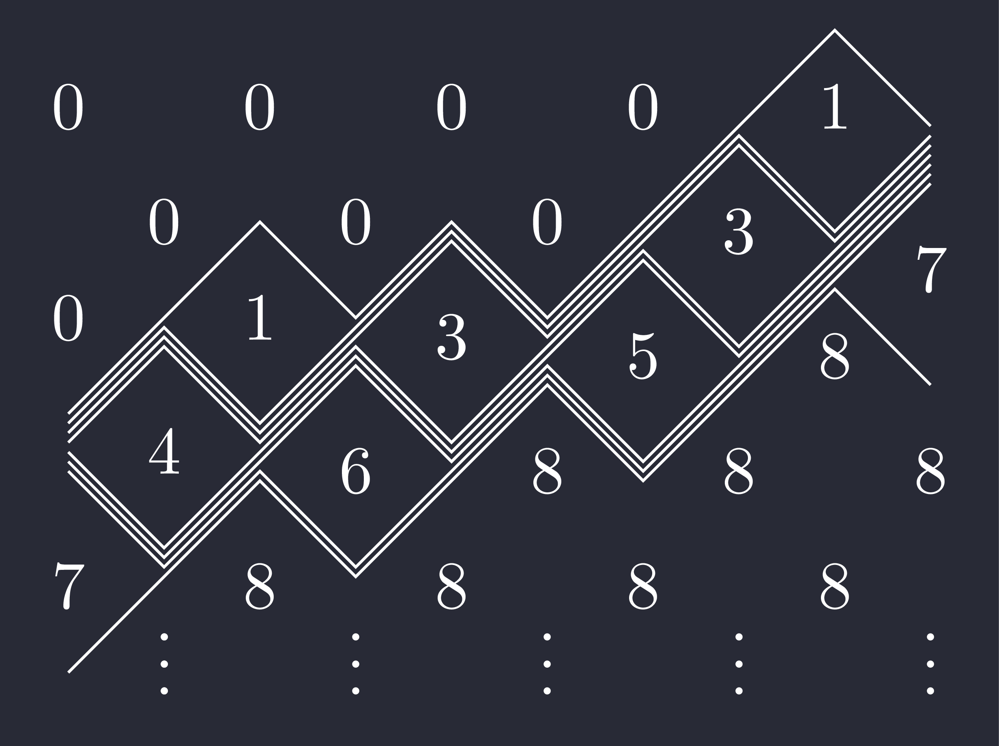
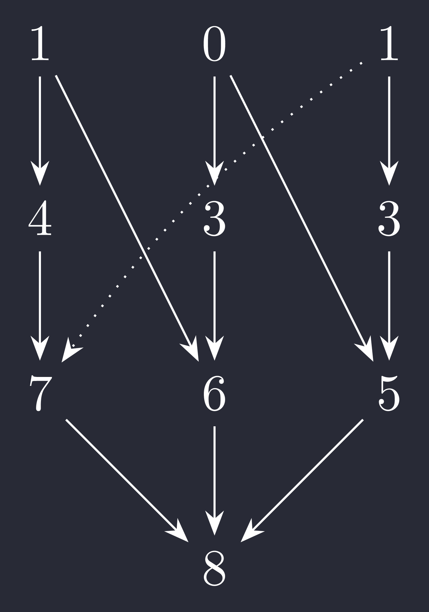
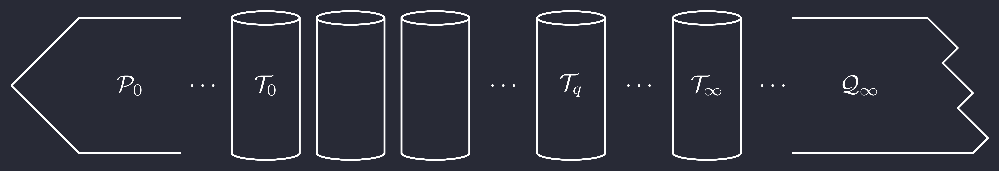
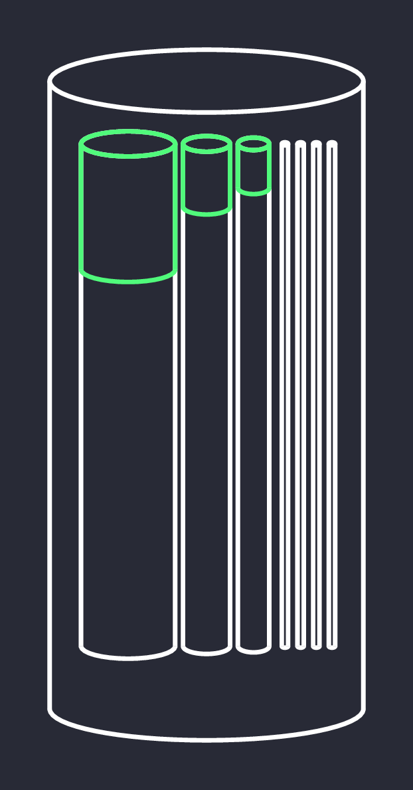
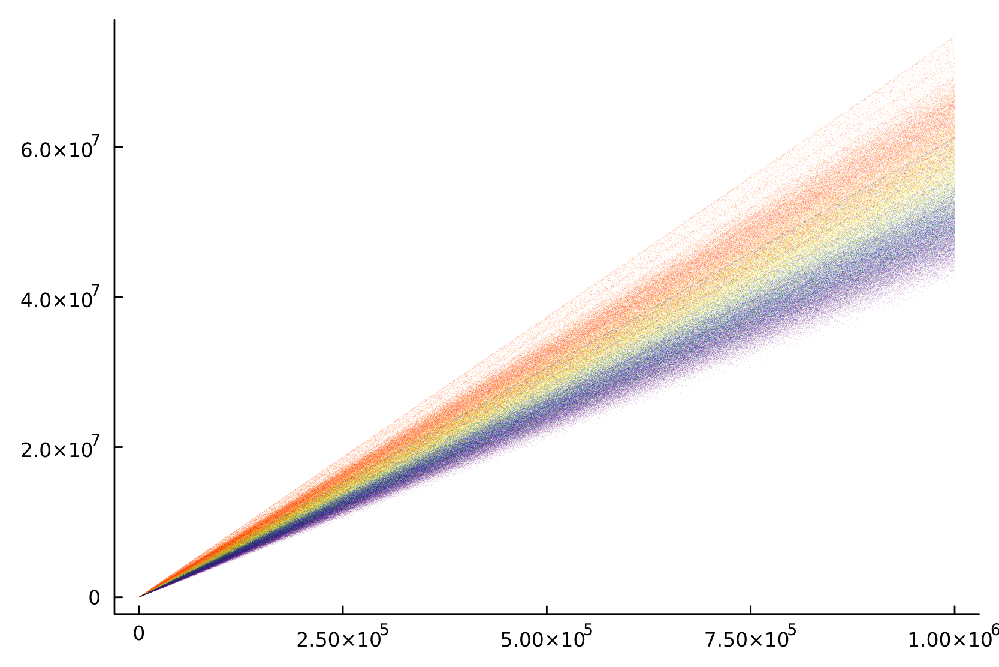

<h1 class="fragment"> I AM COUNTING THINGS</h1> <!-- ## Ellis Caird --> <u class="fragment fade-right" style="display:block;">What am I counting?</u> <span class = "fragment fade-up" style="display: block;">Rigid indecomposable modules</span> <u class = "fragment fade-right" style="display:block;">Why am I counting them?</u> <span class = "fragment fade-up" style="display:block;"> They correspond to __cluster variables__ </span> <u class = "fragment fade-right" style="display:block;">How am I counting them?</u> <span class="fragment fade-up" style="display: block;"> _Carefully_ </span> --- <span class="fragment fade-up" style="display:block;">The homogeneous coordinate ring $\mathbb{C}[\mathrm{Gr}(k,n)]$ has a **cluster structure**.</span> <span class="fragment fade-up" style="display:block;">This structure can be **categorified** by the module category $\mathrm{CM}C$ introduced by Jensen, King, and Su.</span> <span class="fragment fade-up" style="display:block;"> Cluster character $\Phi \colon \mathrm{CM}C \to \mathbb{C}[\mathrm{Gr}(k,n)]$</span> <span class="fragment fade-up" style="display:block;" >Rigid indecomposables $\longleftrightarrow$ Cluster variables</span> --- <div style="display: flex; justify-content: center;"> <table> <thead> <tr> <th class="fragment fade-right" data-fragment-index="0" style="border-right:2px solid white;">$k,n$</th> <th class=" fragment fade-down" data-fragment-index="1">$1,n$</th> <th class=" fragment fade-down" data-fragment-index="1">$2,n$</th> <th class=" fragment fade-down" data-fragment-index="1">$3,6$</th> <th class=" fragment fade-down" data-fragment-index="1">$3,7$</th> <th class=" fragment fade-down" data-fragment-index="1">$3,8$</th> <th class="fragment fade-down" data-fragment-index="3" style="color:#50FA7B;">$3,9$</th> <th class="fragment fade-down" data-fragment-index="3" style="color:#50FA7B;">$4,8$</th> <th class="fragment fade-left" data-fragment-index="2" style="color:#FF5555;">$4+,9+$</th> </tr> </thead> <tbody> <tr> <td class="fragment fade-right" data-fragment-index="0" style="font-weight:bold;border-right:2px solid white">#CV</td> <td class=" fragment fade-down" data-fragment-index="1">$n$</td> <td class=" fragment fade-down" data-fragment-index="1">$\frac{n(n-1)}{2}$</td> <td class=" fragment fade-down" data-fragment-index="1">22</td> <td class=" fragment fade-down" data-fragment-index="1">49</td> <td class=" fragment fade-down" data-fragment-index="1">136</td> <td class="fragment fade-down" data-fragment-index="3" style="color:#50FA7B;">$\infty$</td> <td class="fragment fade-down" data-fragment-index="3" style="color:#50FA7B;">$\infty$</td> <td class="fragment fade-left" data-fragment-index="2" style="color:#FF5555;">$\infty$</td> </tr> </tbody> </table> </div> <br> <span style="display:block;color:#50FA7B;" class="fragment fade-down" data-fragment-index="4">How many cluster variables have Plücker degree $r$?</span> <span class="fragment fade-down" data-fragment-index="5" style="color:#50FA7B">How many rigid indecomposable $\mathrm{CM}C$ modules have rank $r$?</span> --- <div style="display: flex; justify-content: center;"> <div class="fragment fade-right"> <p>$\mathrm{CM}C$ module for $3,9$</p> </img> </div> <div style="" class="fragment fade-left"> <p>Mysterious quiver with relations</p> </img> </div> </div> </div> --- ### <span class="fragment fade-down" style="display:block;" data-fragment-index="1">Tubular algebra of type 2,3,6 </span> <div> <span style="display:block;" class="fragment fade-down" data-fragment-index="1" ></img></span> </div> <div style="display:flex; justify-content: center; align-items: center;"> </img> <div style="font-size:35px;display:block;width:50%;"> <p class="fragment fade-left">'High enough' in an exceptional tube $\implies$ <span style="color:#FFB86C;">Rigid</span> </p> <p class="fragment fade-left">Count subspace configurations of <span style="color:#FFB86C;">ambient dimension $r$</span> that are high enough in their tubes </p> </div> </div> --- $$ \begin{align*} N_6(r) &= 3\phi_6(2r-1) + 6\phi_6(2r) + 3\phi_6(2r+1)\\\\ N_3(r) &= 3\phi_3(r) \\\\ N_2(r) &= \begin{dcases} 0 & r \equiv 0 \mod 3\\\ \phi_2\left(\frac{2r-2}{3}\right) + \phi_2\left(\frac{2r+1}{3}\right) & r \equiv 1 \mod 3\\\\ \phi_2\left(\frac{2r-1}{3}\right) + \phi_2\left(\frac{2r+2}{3}\right) & r \equiv 2 \mod 3 \end{dcases} \end{align*} $$ <span class="fragment fade-up" style="display:block;color:lightgray;">$\phi_i(x) = \\# \\{ j < x \mid \gcd (x,j) < i \\}$</span> <span class="fragment fade-up" style="display:block;color:#FFB86C;">$\pmb{N(r) = 3\cdot\left[N_2(r) + N_3(r) + N_6(r)\right]}$</span> --- ### 3,9 <img style="width:80%; height:auto;" src="./39-agent-svg.svg"></img> --- ### 4,8 </img> --- <div style="hyphens:auto;word-break:break-word;display:flex; justify-content: center;flex-direction: column; align-items: center; text-align: left;"> <p style="width:60%;">$\underline{\mathrm{CM}}C \cong \frac{\mathcal{D}^b(\operatorname{coh}\mathbb{X})}{\langle \tau^{-}[1]\rangle} \cong \frac{\mathcal{D}^b(\mathrm{mod}\,P)}{\langle \tau^{-}[1]\rangle}$ where $\mathbb{X}$ is a weighted projective line of weight 2,3,6 or 2,4,4. </p> <p style="width:60%;">Cluster tilting object $T$ in $\underline{\mathrm{CM}}C$ whose (opposite) endomorphism ring is isomorphic to the relation extension of $P$.</p> </div>